# Run the following lines of code
# Packages used in this tutorial
tutorial_packages <- rlang::quos(AER, broom, lme4, broom.mixed, ggeffects,
lmerTest, datasets)
# Install required packages
lapply(lapply(tutorial_packages, rlang::quo_name),
install.packages,
character.only = TRUE
)
# Loading the libraries
lapply(lapply(tutorial_packages, rlang::quo_name),
library,
character.only = TRUE
)
# Datasets used in this tutorial
data("CASchools")
data("CreditCard")
data("RecreationDemand")
data("sleep")
TL;DR
In this article you will learn;
What is a hierarchical model/mixed effects model?
What are fixed effects and random effects?
Building a linear mixed effects model
Adding random intercept group and random effect slope
Random effect syntaxes used in lme4 packages
Plotting linear mixed effects model, the residuals and the confidence intervals
Model comparison using ANOVA
Building generalized mixed effects models: Logistic and Poisson
Plotting generalized mixed effects models
Repeated measures data
Paired t-test and repeated measures ANOVA is a special case of mixed effects model
1 Prologue
This is the fourth tutorial in the series: Statistical modelling using R. Over the past three tutorials we learned about linear models and generalized linear models. In this tutorial, we will learn how to build and understand both linear mixed effect models and generalised linear mixed effect models. They are needed to analyse datasets which have nested structures. We will learn more about it in the coming sections.
2 Making life easier
Please install and load the necessary packages and datasets which are listed below for a seamless tutorial session. (Not required but can be very helpful if you are following this tutorial code by code)
3 What is a hierarchical model?
Consider a dataset of test scores of students in different classrooms across different schools. If we take a closer look into this dataset, we can see that students can be grouped into their respective genders. This group of genders will be ‘nested’ in the group of students. Likewise the student group is nested inside the group of classrooms which is further nested into the group of schools. This is shown in the flowchart given below (Use the scroll bar below the flowchart to navigate).
%%{init: {'securityLevel': 'loose', 'theme':'base'}}%%
flowchart TB
A[Education] --> B(School 1)
A --> C(School 2)
A --> D(School 3)
B --> E(Classroom 1)
B --> F(Classroom 2)
C --> G(Classroom 1)
D --> H(Classroom 1)
D --> I(Classroom 2)
D --> J(Classroom 3)
E --> K(Males: 30, Females: 25)
F --> L(Males: 15, Females: 45)
G --> M(Males: 23, Females: 10)
H --> N(Males: 10, Females: 40)
I --> O(Males: 0, Females: 30)
J --> P(Males: 45, Females: 0)
K --> Q(Test scores)
L --> R(Test scores)
M --> S(Test scores)
N --> T(Test scores)
O --> U(Test scores)
P --> V(Test scores)
subgraph G_1[Schools]
B
C
D
end
style G_1 fill:#f77f00
subgraph G_2[Classrooms]
E
F
G
H
I
J
end
style G_2 fill:#fcbf49
subgraph G_3[Students]
K
L
M
N
O
P
end
style G_3 fill:#eae2b
subgraph G_4[Test Scores]
Q
R
S
T
U
V
end
style G_4 fill:#f8f1ae
Student test scores are nested under the group of students. Students themselves form a group of males and females. Building from this, students are nested under classrooms. Now classrooms follow the same route and group themselves inside schools which further forms yet another group. This is an example of nested data or hierarchical data where the data is nested within itself or has a well-defined hierarchy within itself.
Let us take a scenario where we are introducing a new study method to students which have the potential to raise test scores. We can train students using the new method and compare the test scores to the earlier test scores before the introduction of the novel method.
Our goal is to see if the new study method imparts an effect on the test scores of students and we hypothesise that it will improve the scores. But because of the nature of the data, the test scores can also be affected by the sample size of the students, the sex of the student, the classroom and the school, all of which can impact the test scores. Further, we are sampling the scores of the same students over time after the introduction of the novel test method. This makes the test scores a repeated measure variable and they are not independent across time. Thus our dataset is both nested and sampled across time.
So how do we test if the novel study method affects the test scores by accounting for nestedness and repeated measures?
We can see that linear models won’t do a good job at this. Then, from our understanding of generalized linear models, we might be able to tackle this question. Since we test scores which count data, we can use the Poisson model to predict ‘test scores’ using ‘test method’ as our main explanatory variable and use other variables like student sex, classroom size, school etc. as covariates. But in doing so we are also including the variances in test scores resulting from all the covariates present in our data. This is where mixed effect models or hierarchical models shine as they treat the covariates as ‘random effects’ and pool shared information on the means of the test scores across different groups. Mixed effect models try to account for the nestedness of the data by eliminating some of the variance brought by the random effect variables on the response variable by ‘controlling’ them. Also, since we have different sample sizes for classroom students, classrooms with lower sample sizes will be impacted more by outliers. Thus treating classroom size as a random effect can mitigate this problem.
Here, the ‘random effects’ are the variables; sex of the student, classroom size, and school and the ‘fixed effect’, which is the variable that we are interested in, is the study method. A statistical model which has both random and fixed effect variables is called a ‘mixed effect’ model or a ‘hierarchical’ model.
The definitions of random effect and fixed effect are ambiguous in the scientific literature and there are multiple definitions of what constitutes a random effect and a fixed effect (Gelman 2005).
Gelman (2005) suggest parting ways with the terms ‘random’ and ‘fixed’ and propose to view them as constant and varying;
We define effects (or coefficients) in a multilevel model as constant if they are identical for all groups in a population and varying if they are allowed to differ from group to group. For example, the model y_{ij} = α_j +βx_{ij} (of units i in groups j ) has a constant slope and varying intercepts, and y_{ij} = α_j + β_j x_{ij} has varying slopes and intercepts. (Gelman 2005)
4 Building a mixed-effects model
We will start with a linear mixed-effects model. As seen before, we use this if our residuals follow a normal or simply if our data is normally distributed. If we have count data or binomial data which is not normally distributed, then instead of building a linear mixed effects model we build a generalized linear mixed effects model. We will use the lme4 package in R to build these models.
We will be using the CASchools dataset from the {AER} package in R. The dataset contains test scores which are on the Stanford 9 standardized test administered to 5th-grade students. The dataset has values for 420 elementary schools and the test scores are given as the mean score in reading and their ability to do maths. Other variables correspond to the school characteristics which we will see later along the way.
5 Linear mixed effects model
With the CASchools dataset, we are interested in seeing if the reading scores (read) are predicted by the school expenditure (expenditure). Let us start by plotting the data.
if (!require(AER)) install.packages('AER')
library(AER)
library(ggplot2)
data("CASchools")
# Plotting the data
ggplot(CASchools, aes(expenditure, read)) + geom_point() +
theme_bw() + labs(title = "Reading scores vs Expenditure",
x = "Expenditure per student (in dollars)",
y = "Average reading score")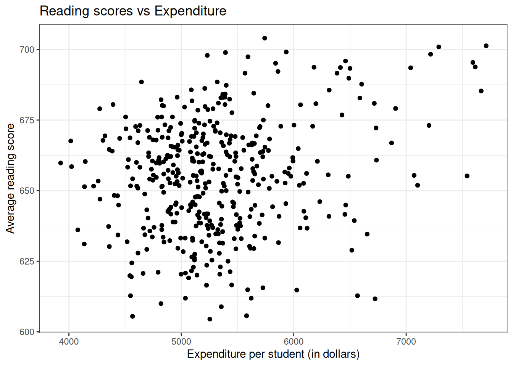
There does not seem to be a general trend that higher expenditure leads to higher scores. Also, most counties tend to have expenditures between 4500 and 5500 dollars.
Now let us try to build a linear model to predict the average reading score (read) with expenditure per student (expenditure) using the lm() function.
if (!require(broom)) install.packages('broom')
library(AER)
library(broom)
data("CASchools")
# Building a linear model
model_lm <- lm(read ~ expenditure, data = CASchools)
# Extracting coefficients from the model
tidy(model_lm)From the coefficient values, we can see that the slope value for expenditure per student is almost zero. This was more or less visible to us from the plot. So does it mean that expenditure has no association with the average reading scores? Before jumping to a conclusion, if we take a closer look at the data, we can see that the scores are nested within counties (county). So let us try adding the variable county to the linear model.
library(AER)
library(broom)
data("CASchools")
# Building a linear model
model_lm <- lm(read ~ expenditure + county, data = CASchools)
# Extracting coefficients from the model
tidy(model_lm)There are a total of 45 counties, so we get 44 intercept values and a global intercept value for the first county in the dataset (which is Alameda). We can also see that the slope for expenditure decreased furthermore and the standard error for the slope estimate also decreased as compared to the previous model. As for the intercepts for the respective counties, all counties as compared to Alameda county have negative intercepts. Now let us check the coefficients for the respective counties without any base county comparisons.
library(AER)
library(broom)
data("CASchools")
# Building a linear model
model_lm <- lm(read ~ expenditure + county - 1, data = CASchools)
# Extracting coefficients from the model
tidy(model_lm)The coefficient for Alameda county is the greatest out of all the counties, which is why we got all the intercept values as negative in the earlier case. Also, the p-value associated with expenditure (p = 0.54) is greater than 0.05 suggesting that expenditure does not explain the variance seen in the average reading scores.
5.1 Adding a random intercept
What if we only want to see how expenditure affects the reading score without the county differences? Let us build a linear mixed effects model with county as the ‘random effect’ and ‘expenditure’ as the ‘fixed effect’. To build a linear mixed effects model we use the function lmer() from the lme4 package in R.
The syntax for building a linear mixed effects model is very similar to the syntax we used while using the lm() and glm() functions. Here we are considering county as a random effect, moreover, the county variable is categorical and therefore, we are essentially considering county as a random intercept.
The notation for specifying random effect within the model formula is (1 | county). If we do not specify a random effect term in the model formula, the lmer() function won’t run. Without further ado, let’s see it in action.
The tidy() function from the broom package in R only work for models built using lm() and glm(). To extend its usage to mixed effects models, we have to install an additional package called broom.mixed
if (!require(lme4)) install.packages('lme4')
if (!require(broom.mixed)) install.packages('broom.mixed')
library(lme4)
library(broom.mixed)
library(AER)
data("CASchools")
# Building a linear mixed effects model
model_lmer <- lmer(read ~ expenditure + (1 | county), data = CASchools)
# Extracting coefficients from the model
tidy(model_lmer)If we look at the slope for expenditure, it is greater than the slope value we got from the linear model but still is almost zero. The standard error for the estimated slope is also less as compared to the earlier built models. But there is a strong role of counties on the average reading score of students. How did I know that? Let us first understand the summary of the linear mixed effects model using the summary() function.
summary(model_lmer)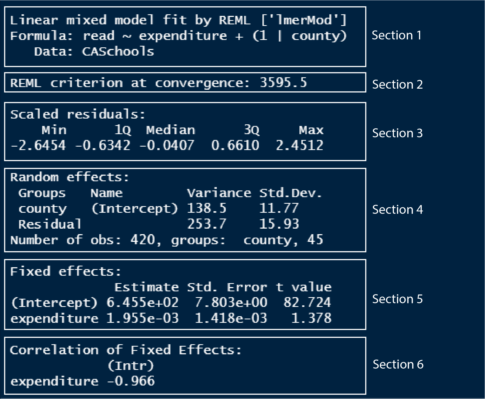
In section 1, we can see the model formula that we used to model the data. It also tells us that the model has been fitted by REML, which stands for restricted maximum likelihood method, the method by which lmer models fit the data.
In section 2, there is a value denoting the REML criterion at convergence. I don’t know exactly what this is, so if I learn more about it and understand it, then I will update this text. From what I read so far, I learned that this value can be a helpful model diagnostic if our model is not ‘converging’.
Section 3 outputs the quantile, min-max and median values of the residual distances of the model.
In section 4, the variance and the standard deviation of both the random intercept variable (county) and the residual (as explained by expenditure) are given. You can see that the variance of counties is more than half the variance of the residual. This variance value is meant to capture all the influences of counties on the average reading score. If we estimate the percentage of variance county contributes as compared to the total variance, then we have;
county_variance = 138.5
residual_variance = 253.7
total_variance = county_variance + residual_variance
# Calculating the percentage of variance of county to the total variance
county_variance / total_variance[1] 0.3531362So the differences between counties explain ~35% of the variance that’s “leftover” after the variance explained by our fixed effects (which is expenditure here). If we had county variance as 0, then the percentage of the variance of counties to the total variance would be 0, which suggests that county is truly a random variable which does not explain the variance seen in the average reading scores.
In section 5, we have the coefficient estimates of the fixed effect variable, something which we have seen extensively in the previous tutorials. You can see that the slope of expenditure (0.001955) is close to zero which indicates that expenditure does not explain the differences seen in the average reading score. We saw the same case when we built a linear model using the same dataset.
In section 6, intercept and expenditure coefficients correlate -0.966. This is another value which I am not sure what it means. From what I read, it tells us that if we were to repeat the analysis using a newly sampled dataset, then with newly estimated coefficients of the fixed effect variable, the correlation value tells us how many of those fixed effect coefficients might be associated. You can read more about it here.
Now that we got a sense of the model summary of a linear mixed effects model, let us see some more functions in R that would be useful for extracting information from the model.
- To extract the coefficients of the fixed effect variables, use the
fixef()
# Extracting the coefficients of the fixed effects
fixef(model_lmer) (Intercept) expenditure
6.454923e+02 1.954755e-03 - To extract the coefficients of the random effect variables, use the
ranef()
# Extracting the coefficients of the fixed effects
ranef(model_lmer)$county
(Intercept)
Alameda 11.87352086
Butte -7.99357120
Calaveras 2.53892633
Contra Costa 15.33621739
El Dorado 10.40224040
Fresno -17.67664299
Glenn 6.54693608
Humboldt 7.30873017
Imperial -13.90694256
Inyo 2.52932318
Kern -16.86794250
Kings -6.14912869
Lake -7.25773124
Lassen 6.16396434
Los Angeles -9.68442015
Madera -2.26427074
Marin 22.22849626
Mendocino -5.18932165
Merced -17.55856455
Monterey -13.20359371
Nevada 10.83326539
Orange -2.23662764
Placer 11.61203226
Riverside -11.18209338
Sacramento -13.86645226
San Benito -4.01536933
San Bernardino -5.97196372
San Diego 3.11246174
San Joaquin -9.12283927
San Luis Obispo 6.55996266
San Mateo 11.56548692
Santa Barbara 9.16868646
Santa Clara 8.23860811
Santa Cruz 15.92725798
Shasta 3.42269880
Siskiyou -3.53860484
Sonoma 10.40368948
Stanislaus 1.60937097
Sutter -0.00741143
Tehama -1.72590741
Trinity 10.21145799
Tulare -16.47382765
Tuolumne 1.76305887
Ventura -7.73323819
Yuba 4.27007248
with conditional variances for "county" - To calculate the confidence intervals of the fixed effect variables, use the
confint()
# Calculating the confidence intervals of the fixed effects
confint(model_lmer) 2.5 % 97.5 %
.sig01 8.886716e+00 1.526132e+01
.sigma 1.483855e+01 1.711469e+01
(Intercept) 6.298888e+02 6.608656e+02
expenditure -8.340782e-04 4.796441e-03By default the confint() function calculates the confidence intervals at 95% level. The displayed result from the function is symmetric over the 95% level. The interpretation of 95% CI for expenditure, in this case, would be; that if we were to repeat the experiment 100 times, then, the 95 of those mean values of the slope would fall between -0.000834 and 0.004796. We have a rather wide confidence interval which includes both a negative and a positive limit which shows that we cannot say whether expenditure decrease or increase the average reading scores.
- We can also use the
tidy()function by loading both the broom and broom.mixed packages to display the estimates and the confidence intervals.
library(broom)
library(broom.mixed)
# Calculating the estimates and the confidence intervals of the model
tidy(model_lmer, conf.int = T)You can see that the random effect variables do not have standard error values. If we compare the model summary between the linear model and the linear mixed effects model we built, we can also see that p-values are not reported for the linear mixed effects model. The author of the lme4 package, Dr. Doug Bates views random effects as latent variables which do not have standard deviations and thus standard errors or p-values are not calculated for them. In addition to this, it is an open research question on how to calculate the p-values for random effects in a mixed-effects model. But using the lmerTest package in R we can perform ad-hoc analyses to report p-values for the fixed effect variables. We will see how to do this further down the section.
5.2 Adding a random slope
So far we have seen how to input random intercepts, now we will see how to input random slopes. The default syntax for random effect in R is (continuous_predictor | random_effect_group). Thus a random slope is calculated, it also estimates a random effect intercept.
In the CASchools dataset, we looked at whether the average reading score is predicted by the expenditure by treating counties as the random intercept group. Now in our datasets, we also have data on the number of students and this could be different for different counties and can affect the average reading score. So this time let us build a model by treating students as the random effect variable.
library(lme4)
library(broom.mixed)
library(AER)
data("CASchools")
# Building a linear mixed effects model using random slope and random intercept
model_lmer2 <- lmer(read ~ expenditure + (students | county), data = CASchools)
# Extracting coefficients from the model
summary(model_lmer2)Linear mixed model fit by REML ['lmerMod']
Formula: read ~ expenditure + (students | county)
Data: CASchools
REML criterion at convergence: 3593.2
Scaled residuals:
Min 1Q Median 3Q Max
-2.67995 -0.64452 0.00953 0.66738 2.52830
Random effects:
Groups Name Variance Std.Dev. Corr
county (Intercept) 3.475e+02 18.642621
students 1.354e-06 0.001164 -0.95
Residual 2.342e+02 15.303481
Number of obs: 420, groups: county, 45
Fixed effects:
Estimate Std. Error t value
(Intercept) 6.467e+02 7.706e+00 83.918
expenditure 6.341e-04 1.413e-03 0.449
Correlation of Fixed Effects:
(Intr)
expenditure -0.958
optimizer (nloptwrap) convergence code: 0 (OK)
boundary (singular) fit: see help('isSingular')The variance of students is very less and therefore might not be affecting the scores that much. Also, note that we got an error message in the output saying boundary (singular) fit. This generally indicates that the estimate for the random effect variable that we used is very small. In our, it means that the random effect slopes of students are very small which we can see using the ranef() function. So we can remove students from our model.
ranef(model_lmer2)$county
(Intercept) students
Alameda 24.4785039 -1.441929e-03
Butte -3.4180179 1.775858e-04
Calaveras 7.9826401 -4.681762e-04
Contra Costa 25.4891245 -1.424787e-03
El Dorado 17.9072929 -1.012206e-03
Fresno -14.0623193 8.308013e-04
Glenn 12.4209156 -7.319719e-04
Humboldt 13.8328480 -8.081011e-04
Imperial -12.2869252 7.016373e-04
Inyo 7.7750632 -4.532749e-04
Kern -12.5277014 4.649777e-04
Kings -1.0528421 1.423524e-05
Lake -5.6736709 3.339620e-04
Lassen 12.5326580 -7.406065e-04
Los Angeles -2.0794607 -2.426704e-04
Madera 2.8489240 -1.656228e-04
Marin 34.7443486 -2.051422e-03
Mendocino -4.6943124 2.762367e-04
Merced -14.2569750 7.113461e-04
Monterey -8.4968704 2.996187e-04
Nevada 18.6703498 -1.085232e-03
Orange 8.6097926 -6.360256e-04
Placer 19.4641692 -1.099682e-03
Riverside -10.6949200 6.195711e-04
Sacramento -12.6097930 7.103399e-04
San Benito 0.1126231 -3.550850e-05
San Bernardino 2.9274439 -3.988533e-04
San Diego 14.1621214 -8.451098e-04
San Joaquin -6.2010253 3.738934e-04
San Luis Obispo 13.5823846 -7.993061e-04
San Mateo 24.7224461 -1.651387e-03
Santa Barbara 20.4963141 -1.417024e-03
Santa Clara 22.7310750 -1.376439e-03
Santa Cruz 26.5648214 -1.605235e-03
Shasta 10.2142367 -6.282100e-04
Siskiyou 2.5622804 -1.403162e-04
Sonoma 18.0499478 -1.078872e-03
Stanislaus 9.0155040 -5.928210e-04
Sutter 4.5333780 -2.714554e-04
Tehama 3.3731884 -2.120293e-04
Trinity 19.7049606 -1.160587e-03
Tulare -12.6199437 7.048954e-04
Tuolumne 7.6541244 -4.484524e-04
Ventura -1.4092318 -1.002546e-04
Yuba 10.9917466 -6.477161e-04
with conditional variances for "county" 5.4 Adding the same variable as both fixed and random effect
Sometimes we can have a model with both the fixed effect and the random effect as the same variable. Suppose we are interested in seeing the average effect of expenditure on the average reading scores across counties. In that case, we use expenditure both as a fixed effect and as a random effect. Before using expenditure in the model formula, it is better to use the scale() function to rescale the data values for better numerical stability.
library(lme4)
library(broom.mixed)
library(AER)
data("CASchools")
# Rescaling expenditure values
CASchools_scaled <- CASchools
CASchools_scaled$expenditure_scaled <- scale(CASchools_scaled$expenditure)
# Building a linear mixed effects model (same fixed and random effect)
model_lmer4 <- lmer(read ~ expenditure + (expenditure | county), data = CASchools)
# Extracting coefficients from the model
summary(model_lmer4)Linear mixed model fit by REML ['lmerMod']
Formula: read ~ expenditure + (expenditure | county)
Data: CASchools
REML criterion at convergence: 3563.6
Scaled residuals:
Min 1Q Median 3Q Max
-2.63568 -0.62932 0.02378 0.64384 2.60189
Random effects:
Groups Name Variance Std.Dev. Corr
county (Intercept) 6.566e+02 25.623717
expenditure 3.880e-05 0.006229 -0.94
Residual 2.254e+02 15.014211
Number of obs: 420, groups: county, 45
Fixed effects:
Estimate Std. Error t value
(Intercept) 6.534e+02 9.100e+00 71.801
expenditure 3.237e-04 1.828e-03 0.177
Correlation of Fixed Effects:
(Intr)
expenditure -0.976
optimizer (nloptwrap) convergence code: 0 (OK)
unable to evaluate scaled gradient
Model failed to converge: degenerate Hessian with 1 negative eigenvaluesThe table below shows all the different types of random effect syntaxes we can use in the lmer() function.
| Random effect syntax | What it means |
|---|---|
| (1 | group) | Random intercept with fixed mean |
| (1 | g1/g2) | Intercepts vary among g1 and g2 within g1 |
| (1 | g1) + (1 | g2) | Random intercepts for 2 variables |
| x + (x | g) | Correlated random slope and intercept |
| x + (x || g) | Uncorrelated random slope and intercept |
6 Plotting lmer models
Earlier we had functions like fmodel() from the {statisticalModeling} package and arguments like geom_smooth() or stat_smooth() from the ggplot2 package in R to help us plot linear models and generalized linear models. Thanks to the ggeffects package in R, we have an easy of plotting our lmer models. But first, let us see how we got it with the ggplot2 package in R.
We will have to do some manual tidying and wrangling of our model object to extract values which we need to plot using the ggplot2 package.
To plot the trend line, we can use the predict() function to predict values using the training dataset itself and save those predicted values into a new column in the dataset. Then plot the trend lines them using those predicted values.
library(lme4)
library(AER)
library(dplyr)
library(ggplot2)
data("CASchools")
# Building a linear model
model_lm <- lm(read ~ expenditure + county, data = CASchools)
# Building a linear mixed effects model
model_lmer <- lmer(read ~ expenditure + (1 | county), data = CASchools)
# Saving predicted values for each model
data <- CASchools %>% mutate(predicted_lm = predict(model_lm),
predicted_lmer = predict(model_lmer))
# Plotting the predicted values as lines
ggplot(data, aes(x = expenditure, y = read, color = county)) +
geom_point() +
geom_line(aes(x = expenditure, y = predicted_lm)) +
geom_line(aes(x = expenditure, y = predicted_lmer), linetype = 'dashed') +
labs(title = "Linear models vs Linear mixed effects model",
x = "Expenditure per student (in dollars)",
y = "Average reading score") +
theme_bw()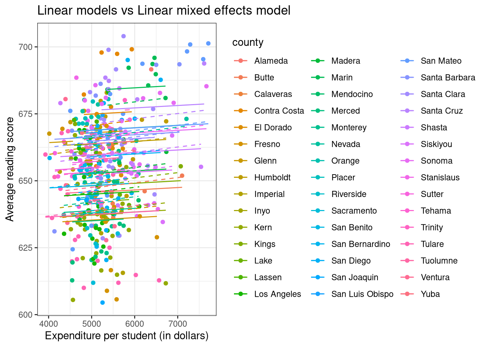
We have 54 different counties which make the plot somewhat overwhelming.
We can also plot the predicted values as data points in the plot. Let us build another model without any groups using the same dataset. We will use the number of teachers in the school (teachers) as a random effect instead of the counties.
library(lme4)
library(AER)
library(dplyr)
library(ggplot2)
data("CASchools")
# Building a linear model
model_lm <- lm(read ~ expenditure + teachers, data = CASchools)
# Building a linear mixed effects model
model_lmer <- lmer(read ~ expenditure + (1 | teachers), data = CASchools)
# Saving predicted values for each model
data <- CASchools %>% mutate(predicted_lm = predict(model_lm),
predicted_lmer = predict(model_lmer))
# Plotting the predicted values as points
ggplot(data, aes(x = expenditure, y = read)) +
geom_point() +
geom_point(data = data,
aes(x = expenditure, y = predicted_lm),
color = "red", alpha = 0.5) +
geom_point(data = data,
aes(x = expenditure, y = predicted_lmer),
color = 'blue', alpha = 0.5) +
labs(title = "Linear models vs Linear mixed effects model",
x = "Expenditure per student (in dollars)",
y = "Average reading score") +
theme_bw()
With the ggeffects package, plotting a lmer model is as easy as two lines of code. Since we have 54 counties, I am not plotting them via counties, so it is not included in the terms = "c()" argument.
if (!require(ggeffects)) install.packages('ggeffects')
library(lme4)
library(AER)
library(ggeffects)
data("CASchools")
# Building a linear mixed effects model
model_lmer <- lmer(read ~ expenditure + (1 | county), data = CASchools)
# Predicting values
model_lmer_predict <- ggpredict(model_lmer, terms = c("expenditure"))
# Plotting the model
plot(model_lmer_predict)
7 Plotting the residuals
We can use the base plot() function to plot the residuals of the models.
library(lme4)
library(AER)
library(dplyr)
library(ggplot2)
data("CASchools")
# Building a linear model
model_lm <- lm(read ~ expenditure + county, data = CASchools)
# Building a linear mixed effects model
model_lmer <- lmer(read ~ expenditure + (1 | county), data = CASchools)
# Plotting the linear model diagnostics
par(mfrow=c(2,2))
plot(model_lm)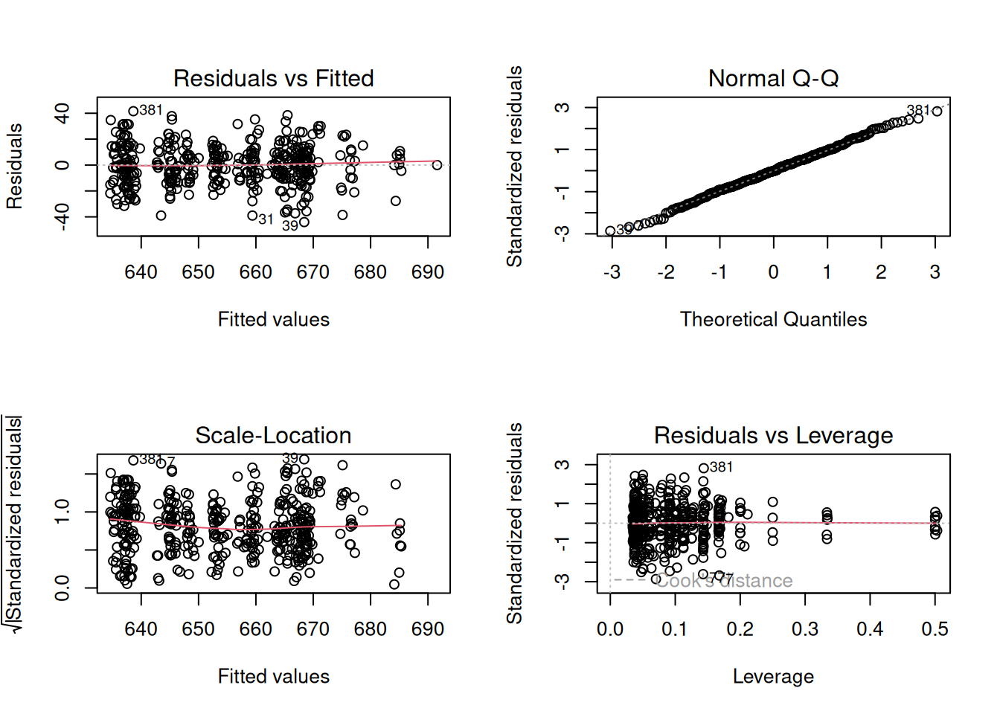
# Plotting the linear mixed effects model diagnostics (just the residuals actually)
plot(model_lmer)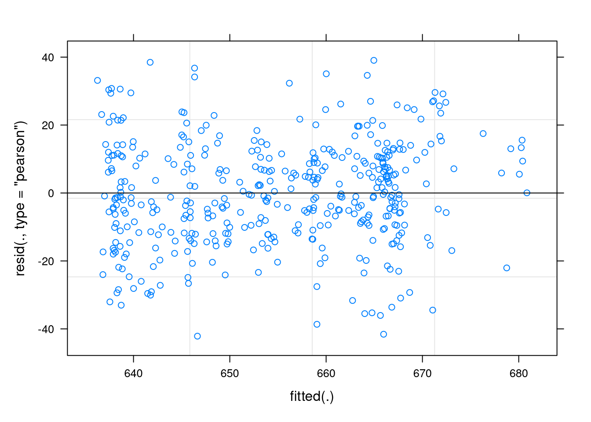
8 Plotting the cofidence intervals
We can also plot the confidence intervals of the fixed effect variables using the ggplot() function.
library(lme4)
library(AER)
library(broom)
library(broom.mixed)
library(ggplot2)
data("CASchools")
# Building a linear mixed effects model
model_lmer <- lmer(read ~ expenditure + (1 | county), data = CASchools)
# Extracting the coefficients
model_lmer_coef <- tidy(model_lmer, conf.int = T)
model_lmer_coef1 <- model_lmer_coef %>%
filter(effect == "fixed" & term != "(Intercept)")
# Plotting the 95% CI
model_lmer_conf <- ggplot(model_lmer_coef1, aes(x = term, y = estimate,
ymin = conf.low, ymax = conf.high)) +
geom_hline(yintercept = 0, color = 'red') +
geom_point() +
geom_linerange() +
coord_flip() +
labs(title = "Linear models vs Linear mixed effects model",
x = "Regression coefficient",
y = "Coefficient estimate and 95% CI") +
theme_bw()
model_lmer_conf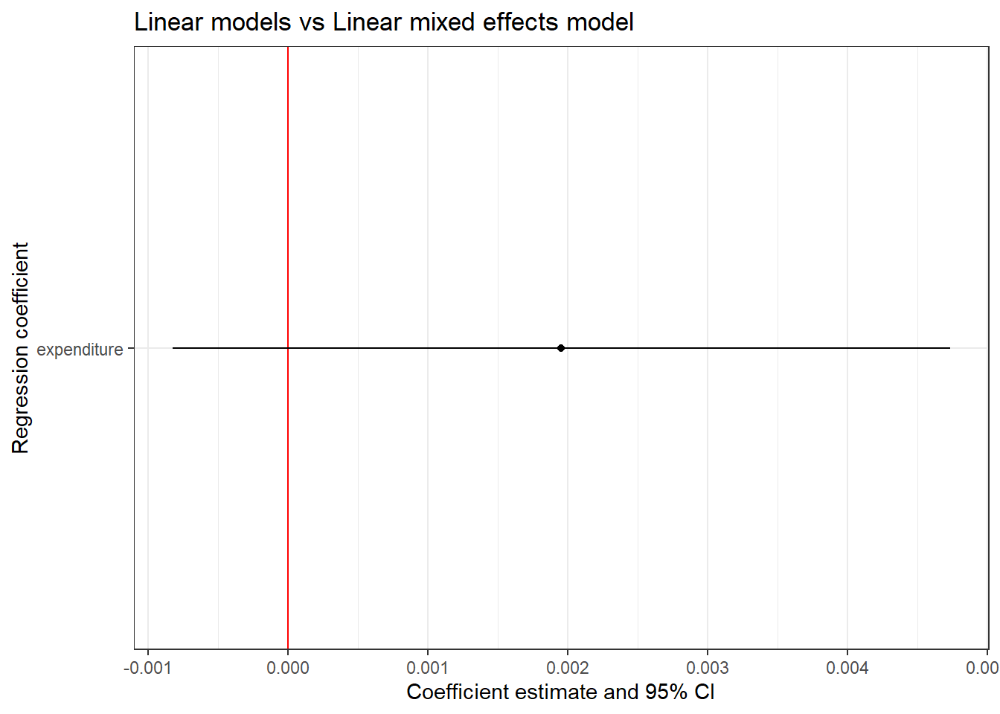
Let us try including more fixed effect terms in the model. We will include the number of teachers in the school (teachers) and the number of students in the school (students) as fixed effects.
library(lme4)
library(AER)
library(broom)
library(broom.mixed)
library(ggplot2)
data("CASchools")
# Building a linear mixed effects model
model_lmer <- lmer(read ~ expenditure + teachers + students + (1 | county),
data = CASchools)
# Extracting the coefficients
model_lmer_coef <- tidy(model_lmer, conf.int = T)
model_lmer_coef1 <- model_lmer_coef %>%
filter(effect == "fixed" & term != "(Intercept)")
# Plotting the 95% CI
model_lmer_conf <- ggplot(model_lmer_coef1, aes(x = term, y = estimate,
ymin = conf.low, ymax = conf.high)) +
geom_hline(yintercept = 0, color = 'red') +
geom_point() +
geom_linerange() +
coord_flip() +
labs(title = "Linear models vs Linear mixed effects model",
x = "Regression coefficient",
y = "Coefficient estimate and 95% CI") +
theme_bw()
model_lmer_conf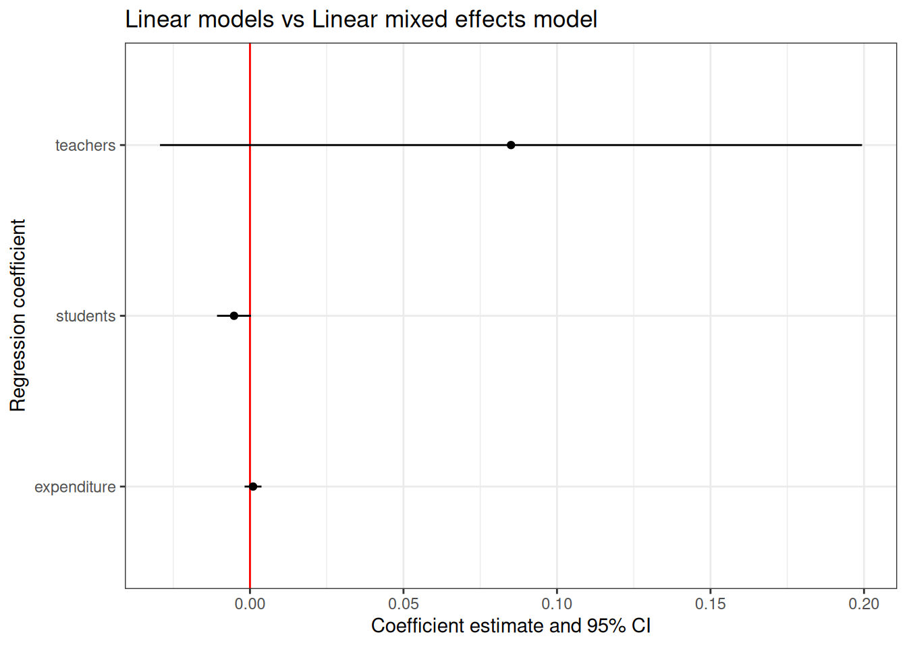
9 Null hypothesis testing
As mentioned earlier, p values are not calculated for fixed terms using the lme4 package for various reasons. So if we have to calculate the p values, we have to use the lmerTest package in R. By loading the lmerTest package, the lme4 package is automatically loaded. We don’t have to provide any special syntax for calculating the p-values, instead, p-values are automatically calculated when calling the lmer() function.
if (!require(lmerTest)) install.packages('lmerTest')
library(lmerTest)
library(AER)
data("CASchools")
# Building a linear mixed effects model
model_lmer <- lmer(read ~ expenditure + teachers + students + (1 | county),
data = CASchools)
# Printing model summary
summary(model_lmer)Linear mixed model fit by REML. t-tests use Satterthwaite's method [
lmerModLmerTest]
Formula: read ~ expenditure + teachers + students + (1 | county)
Data: CASchools
REML criterion at convergence: 3590.2
Scaled residuals:
Min 1Q Median 3Q Max
-2.7343 -0.6384 0.0471 0.6343 2.2823
Random effects:
Groups Name Variance Std.Dev.
county (Intercept) 138.6 11.77
Residual 239.6 15.48
Number of obs: 420, groups: county, 45
Fixed effects:
Estimate Std. Error df t value Pr(>|t|)
(Intercept) 652.737953 7.767375 412.474266 84.036 <2e-16 ***
expenditure 0.001005 0.001404 410.295073 0.715 0.4749
teachers 0.085024 0.058332 391.351530 1.458 0.1458
students -0.005188 0.002825 392.820325 -1.836 0.0671 .
---
Signif. codes: 0 '***' 0.001 '**' 0.01 '*' 0.05 '.' 0.1 ' ' 1
Correlation of Fixed Effects:
(Intr) expndt techrs
expenditure -0.964
teachers 0.141 -0.163
students -0.152 0.170 -0.997
fit warnings:
Some predictor variables are on very different scales: consider rescalingFor fixed effects, p-values are calculated to test if the coefficients are significantly different from zero.
10 Model comparison using ANOVA
We can use ANOVA to compare two models to see which one is better. The ANOVA test is called by the function anova() and it is used to compare models by comparing the amount of variability explained by each model.
Let us test if the number of teachers significantly affects the average reading score of students across different counties. First, we will build a ‘null model’ with just county as the random effect. Then we will build another model with teachers as the fixed effect and the rest the same as the previous model.
library(lme4)
library(AER)
data("CASchools")
# Building a linear mixed effects model with only random effect (null model)
model_lmer_null <- lmer(read ~ (1 | county),
data = CASchools)
# Building a linear mixed effects model with fixed effect
model_lmer_teacher <- lmer(read ~ teachers + (1 | county),
data = CASchools)
# Comparing models using ANOVA
anova(model_lmer_null, model_lmer_teacher)From the ANOVA result, it seems like adding the variable teacher made the model better as it yielded significant p-values.
11 Generalized linear mixed effects model
Same way as we made the transition from linear models to generalized linear models, we now transition from linear mixed effects model to generalized mixed effects model. As you might have guessed, we will be dealing with datasets which do not follow the normal distribution and are in the form of a count or binomial type.
We use the glmer() function to build generalized linear mixed effects models (glmer models) and use the family = " " argument to specify the distribution of residuals of the data. If it’s non-normal and is count then we use family = "poisson" and if it’s binomial then we use family = "binomial".
11.1 Logistic mixed effects model
For this exercise, we will be using the CreditCard dataset from the {AER} package in R. The dataset contains the credit history of a sample of applicants for a type of credit card. We will be building a glmer model to predict the success of the acceptance of the credit card application (card) using yearly income (income) as the fixed effect and the house ownership status (owner) as the random effect.
Let us first build a plot and visualize the data before building the model.
library(ggplot2)
library(AER)
data("CreditCard")
# Plotting the data
ggplot(CreditCard, aes(income, card, col = owner)) +
geom_jitter(width = 0, height = 0.05) +
labs(title = "Does income affect the success in accepting a credit card application?",
x = "Yearly income (in USD 10,000)",
y = "Was the application for a credit card accepted?") +
theme_bw()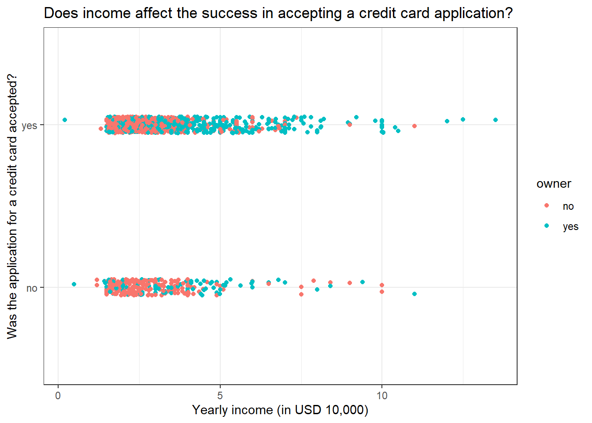
It seems like individuals with low yearly income tend to have the most number of credit card application rejections.
Now let us build the model.
library(lme4)
library(AER)
data("CreditCard")
# Building a logistic mixed effects model
model_glmer_logistic <- glmer(card ~ income + (1 | owner), family = "binomial",
data = CreditCard)
# Printing the summary of the model
summary(model_glmer_logistic)Generalized linear mixed model fit by maximum likelihood (Laplace
Approximation) [glmerMod]
Family: binomial ( logit )
Formula: card ~ income + (1 | owner)
Data: CreditCard
AIC BIC logLik deviance df.resid
1384.1 1399.6 -689.0 1378.1 1316
Scaled residuals:
Min 1Q Median 3Q Max
-3.2271 0.3708 0.4626 0.6115 0.6626
Random effects:
Groups Name Variance Std.Dev.
owner (Intercept) 0.09638 0.3105
Number of obs: 1319, groups: owner, 2
Fixed effects:
Estimate Std. Error z value Pr(>|z|)
(Intercept) 0.99357 0.27913 3.560 0.000371 ***
income 0.09610 0.04779 2.011 0.044338 *
---
Signif. codes: 0 '***' 0.001 '**' 0.01 '*' 0.05 '.' 0.1 ' ' 1
Correlation of Fixed Effects:
(Intr)
income -0.564From a quick look, it seems like income does significantly explain the variance seen in the success of accepting a credit card application.
We learned from logistic GLMs that it’s easier to interpret the coefficients as odds ratio by exponentiating them. The same principle follows here.
library(lme4)
library(broom)
library(broom.mixed)
library(AER)
data("CreditCard")
# Building a logistic mixed effects model
model_glmer_logistic <- glmer(card ~ income + (1 | owner), family = "binomial",
data = CreditCard)
# Extracting the odds ratios
tidy(model_glmer_logistic, exponentiate = T)We can see that the odds ratio for income is very close to 1, which is why the p-value associated with income is close to the level of significance of 0.05. So there is a weak effect on income in deciding the success of accepting credit card applications. There might be some other variables that we are missing to incorporate into the model.
11.2 Plotting a logistic mixed effects model
As we saw in the case with the linear mixed effects model, we will be using the ggeffects package.
library(lme4)
library(ggeffects)
library(AER)
data("CreditCard")
# Building a logistic mixed effects model
model_glmer_logistic <- glmer(card ~ income + (1 | owner), family = "binomial",
data = CreditCard)
# Predicting values
model_glmer_logistic_predict <- ggpredict(model_glmer_logistic, "income")
# Plotting the model
plot(model_glmer_logistic_predict)
11.3 Poisson mixed effects model
For this exercise, we will be using the RecreationDemand dataset from the {AER} package in R. The data is on the number of recreational boating trips to Lake Somerville, Texas, in 1980, based on a survey administered to 2,000 registered leisure boat owners in 23 counties in eastern Texas, USA.
We will be predicting the number of boating trips (trips) using the annual household income of the respondent (income) as the fixed effect and water-skiing status at the lake (ski) as the random effect.
Let us first build a plot and visualize the data before building the model.
library(ggplot2)
library(AER)
data("RecreationDemand")
# Plotting the data
ggplot(RecreationDemand, aes(income, trips, col = ski)) +
geom_jitter(width = 0.05, height = 0) +
labs(title = "Does income affect the number of recreational boating trips?",
x = "Annual household income of the respondent (in 1,000 USD)",
y = "Number of recreational boating trips") +
theme_bw()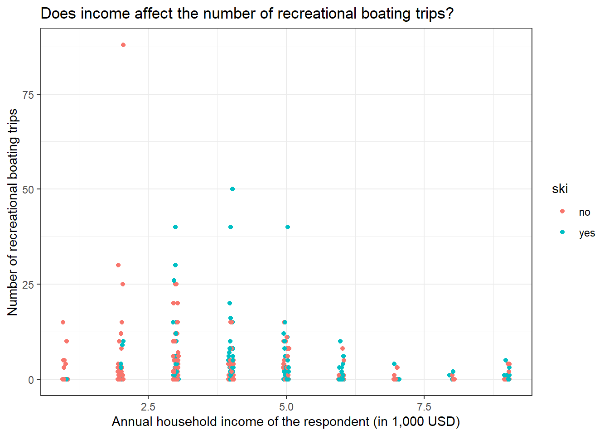
The graph tells us that most boating trips are made by people with less annual household income. Please note that there are many zeros in the dataset, essentially we have a zero-inflated dataset. But for now, we will ignore it. Skiing status doesn’t seem to affect the number of boating trips made.
Now let us build the model and see.
library(lme4)
library(AER)
data("RecreationDemand")
# Building a poisson mixed effects model
model_glmer_poisson <- glmer(trips ~ income + (1 | ski), family = "poisson",
data = RecreationDemand)
# Printing the summary of the model
summary(model_glmer_poisson)Generalized linear mixed model fit by maximum likelihood (Laplace
Approximation) [glmerMod]
Family: poisson ( log )
Formula: trips ~ income + (1 | ski)
Data: RecreationDemand
AIC BIC logLik deviance df.resid
5454.7 5468.2 -2724.4 5448.7 656
Scaled residuals:
Min 1Q Median 3Q Max
-2.192 -1.506 -1.291 -0.242 56.932
Random effects:
Groups Name Variance Std.Dev.
ski (Intercept) 0.09025 0.3004
Number of obs: 659, groups: ski, 2
Fixed effects:
Estimate Std. Error z value Pr(>|z|)
(Intercept) 1.42434 0.22221 6.410 1.46e-10 ***
income -0.15402 0.01674 -9.199 < 2e-16 ***
---
Signif. codes: 0 '***' 0.001 '**' 0.01 '*' 0.05 '.' 0.1 ' ' 1
Correlation of Fixed Effects:
(Intr)
income -0.269Seems like income has a significant negative impact on the number of boating trips as seen earlier in the graph.
11.4 Plotting a Poisson mixed effects model
Again we will be using the ggeffects package.
library(lme4)
library(ggeffects)
library(AER)
data("RecreationDemand")
# Building a poisson mixed effects model
model_glmer_poisson <- glmer(trips ~ income + (1 | ski), family = "poisson",
data = RecreationDemand)
# Predicting values
model_glmer_poisson_predict <- ggpredict(model_glmer_poisson,
terms = c("income", "ski"))
# Plotting the model
plot(model_glmer_poisson_predict)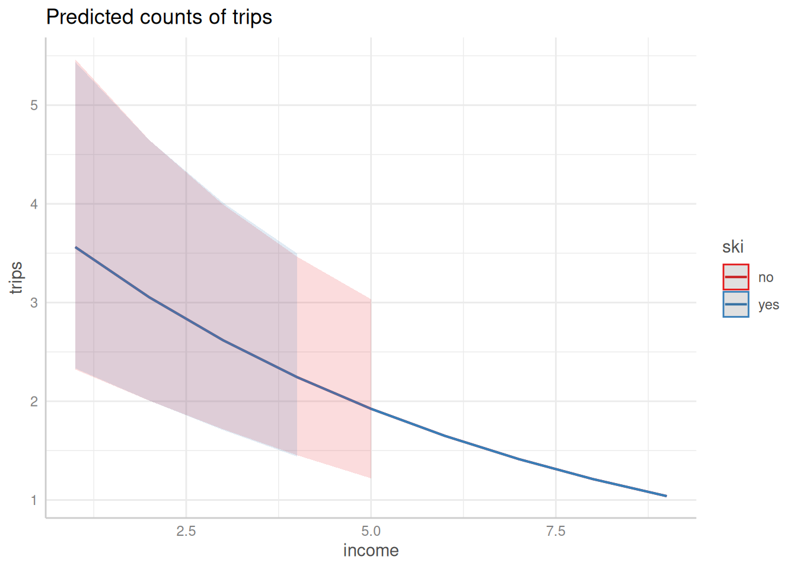
12 Repeated measures data
If we measure variables across time for the same set of observations then essentially we have repeated measures data. Repeated measures are a special case of a mixed-effects model. Examples of repeated measures include; tracking test scores of students across an academic year, measuring drug effects on patients over time, measuring the growth of bacteria over time, measuring flower phenology over different seasons etc.
We will be using the sleep dataset from the {datasets} package in R. The data show the effect of two soporific drugs (increase in hours of sleep compared to control) on 10 patients. In this case, we are measuring sleep difference in hours across time (extra) for two groups (group), essentially repeated measured data.
First, let us visualize the dataset.
if (!require(datasets)) install.packages('datasets')
library(datasets)
library(ggplot2)
data("sleep")
# Plotting the graph
ggplot(sleep, aes(group, extra, group = ID)) + geom_line() +
labs(title = "Effect of two soporific drugs on sleep in 10 patients",
x = "Drug group",
y = "Increase in hours of sleep compared to control") +
theme_bw()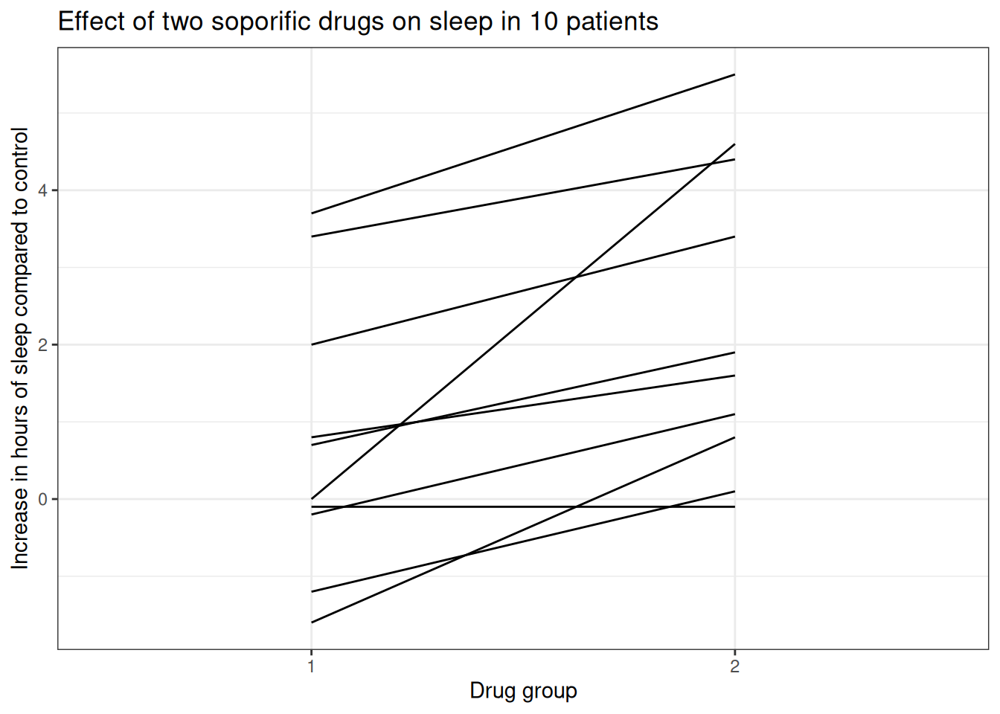
The graph shows that drug 2 as compared to drug 1 increases the amount of sleep in hours when compared to control. Now let us see if this difference is statistically significant.
In introductory statistic classes, we would have learned that to compare means across time for this ‘paired’ dataset, we can use a paired t-test. Performing a t-test in R is through the t.test() function. If we use t.test(paired = T) then essentially we are doing a paired t.test. Let us do a paired t-test on the above-mentioned dataset.
library(datasets)
data("sleep")
# Performing a paired t.test
t.test(extra ~ group, paired = T, data = sleep)
Paired t-test
data: extra by group
t = -4.0621, df = 9, p-value = 0.002833
alternative hypothesis: true mean difference is not equal to 0
95 percent confidence interval:
-2.4598858 -0.7001142
sample estimates:
mean difference
-1.58 The t-test results suggest a significant difference between the mean of the sleep differences and the difference between the mean of the sleep difference between the two groups is -1.58. In other words, group 2 has a 1.58 value greater mean as compared to group 1.
Now let us run a linear mixed effects model with extra as the response variable, group as the fixed effect and the ID as the random effect.
library(datasets)
data("sleep")
# Building a linear mixed effect model
summary(lmer(extra ~ group + (1 | ID), data = sleep))Linear mixed model fit by REML. t-tests use Satterthwaite's method [
lmerModLmerTest]
Formula: extra ~ group + (1 | ID)
Data: sleep
REML criterion at convergence: 70
Scaled residuals:
Min 1Q Median 3Q Max
-1.63372 -0.34157 0.03346 0.31511 1.83859
Random effects:
Groups Name Variance Std.Dev.
ID (Intercept) 2.8483 1.6877
Residual 0.7564 0.8697
Number of obs: 20, groups: ID, 10
Fixed effects:
Estimate Std. Error df t value Pr(>|t|)
(Intercept) 0.7500 0.6004 11.0814 1.249 0.23735
group2 1.5800 0.3890 9.0000 4.062 0.00283 **
---
Signif. codes: 0 '***' 0.001 '**' 0.01 '*' 0.05 '.' 0.1 ' ' 1
Correlation of Fixed Effects:
(Intr)
group2 -0.324If we closely compare the paired t-test result and the summary of the linear mixed effect model, we can notice some similarities.
- The test statistic t-value is the same in both the results if we ignore the sign (4.062).
- The p-value is the same (0.00283)
- The coefficient for the group2 is the same as the mean difference denoted in the paired t-test result after ignoring the sign (1.5800).
Paired t-test is a special case of repeated measures ANOVA. If we have only two dependent groups and if it’s normally distributed, then we use the paired t-test to compare their means. If we have more than 2 dependent groups, then we go repeated measures ANOVA. On the other hand, repeated measures ANOVA is a special case of the mixed effects model.
So to compare the means for paired data, we can go for two different statistical approaches;
- Regression analysis
- ANOVA type approach
We already saw the regression analysis approach which is what we did earlier. Here, we build a linear mixed model and then examine if the drug group coefficient differs greatly from zero. In our case, the coefficient for group2 is 1.58 and is significantly greater than 0. So we can directly see that group2 significantly affects extra hours of sleep as compared to group1, without the need for any post hoc test which is needed if we are running an ANOVA.
So the null and alternate hypotheses for the regression analysis of our data would be;
- H_0 = Drug group coefficient is zero
- H_a = Drug group coefficient is not zero
In the second approach, we examine if the drug group covariate explains a significant amount of variability within the model. There will be no effect on the drug group if the amount of sleep the study participants get in both groups is similar. ANOVA will only tell that there is a significant difference between some groups in the model, to see which groups differ from each other, we have to go for a post hoc test.
So the null and alternate hypothesis for the ANOVA type approach for our data would be;
- H_0 = Drug group does not significantly explain the differences in extra sleep hours
- H_a = Drug group significantly explain the differences in extra sleep hours
Going forward with the ANOVA type approach can be as easy as using the function anova() by giving the model as the input.
library(datasets)
data("sleep")
# Building a linear mixed effects model
sleep_model <- lmer(extra ~ group + (1 | ID), data = sleep)
# Performing a ANOVA
anova(sleep_model)As we have seen earlier, the drug group does significantly explain the differences in extra sleep hours of the patients. We can also see that the p-values calculated are identical to that of the model summary we saw before.
13 Fixed effect models (lm and glm) vs Mixed effects models (lmer and glmer)
We have reached the final level of the tutorial. Here we will compare the fixed effects models and mixed effects models and get an overall picture of the differences between them.
| Fixed effects model | Mixed effects model |
|---|---|
| Generally more impacted by outliers | More robust to outliers |
Use lm() or glm() in base R |
Use lmer() or glmer() from lme4 package in R |
| Easier to explain | Computationally harder to fit |
| Easier to build | More robust to small group sizes |
| Models nested distributions |
14 Conlusion
Finally, we have completed the most needed things in statistical modelling that concerns a PhD student, especially if that student is studying Ecology. In summary, we learned the following things;
What is a hierarchical model/mixed effects model?
What are fixed effects and random effects?
Building a linear mixed effects model
Adding random intercept group and random effect slope
Random effect syntaxes used in lme4 packages
Plotting linear mixed effects model, the residuals and the confidence intervals
Model comparison using ANOVA
Building generalized mixed effects models: Logistic and Poisson
Plotting generalized mixed effects models
Repeated measures data
Paired t-test and repeated measures ANOVA is a special case of mixed effects model
Now where to go from here? Normally, whatever is covered till now will be enough for most purposes as a student of science. Now if you the reader is still interested in learning more, then I welcome you to learn ‘Non-linear Modelling in R with Generalized Additive Models (GAM)’ which would raise our modelling repertoire to even higher levels. Congratulations for making it this far, I wish you all the best 👍
References
Gelman, Andrew. 2005. “Analysis of Variance—Why It Is More Important Than Ever.” The Annals of Statistics 33 (1). https://doi.org/10.1214/009053604000001048.
Reuse
Citation
BibTeX citation:
@online{johnson2022,
author = {Johnson, Jewel},
title = {Hierarchical and {Mixed} {Effects} {Models} in {R}},
date = {2022-08-28},
url = {https://one-carat-blog.netlify.app//tutorials/stat_model/glmer_stat_model.html},
langid = {en}
}
For attribution, please cite this work as:
Johnson, Jewel. 2022. “Hierarchical and Mixed Effects Models in
R.” August 28, 2022. https://one-carat-blog.netlify.app//tutorials/stat_model/glmer_stat_model.html.